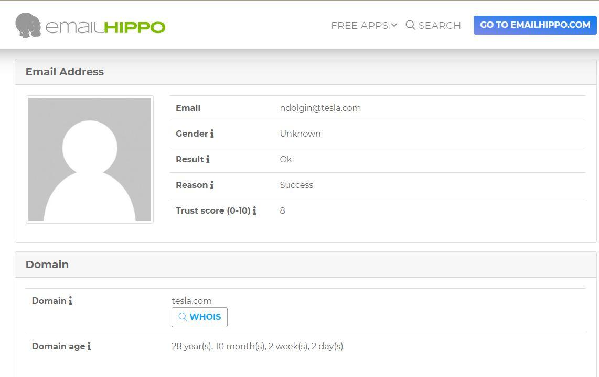

Here we will learn how to verify someone's mail or how to get someone's mail in the first place. Will have many resources for it
- hunter.io (https://hunter.io/)
As we have selected tesla so we have many results related to it. And we can see here is a certain pattern here (i.e. Most common pattern: {f}{last}@tesla.com )
In Discovering mail video we have to use 10 minute mail to login because it ask for work email so u will not able to login with normal email.
-phonebook.cz( https://phonebook.cz/ )
Here will get more results than hunter.io and could use this email for credential stuffing and using password like summer2020! and see it if logs into any of these accounts.

- clearbit connect( https://chrome.google.com/webstore/detail/clearbit-connect-supercha/pmnhcgfcafcnkbengdcanjablaabjplo?hl=en )
In order to use it have to installed the chrome extension for it. So we can see a pattern that tesla uses first inital and last name policy.

What is the process to hunt something down ?
- Start with a google search. (i.e. Who is in this role at this company if looking at a specific person at a company)
- Then will go to phonebook.cz or hunter.io to identify the formating of the email (i.e try not to burn the clear bits unless need to)
- After reaching at this point we can verify this mail through Email Hippo (i.e. https://tools.emailhippo.com/)
Using emailhippowe can simply validate the mail without itneracting with the person of doing an investigation of a cilent so without interacting with
him we can validate his/her mail.

- Last trick but not the least is don't under-estimatethe power of forgot passwords.
If somebody shows up in a data breach guess what that email address has been used in the past